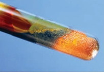
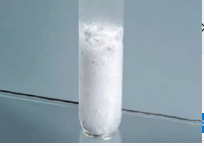
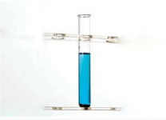
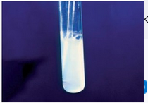
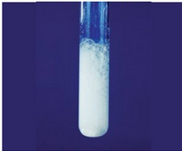
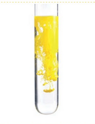
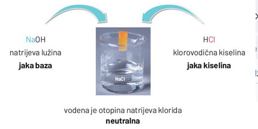
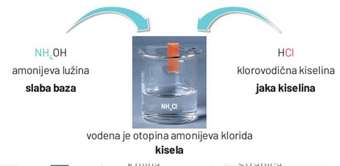
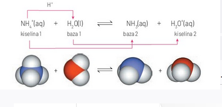

- sastoji se od Atomske jezgre i Elektronskog omotača - Elektronski omotač - čine negativno nabijeni elektroni koji se gibaju oko pozitivno nabijene jezgre. - Elektroni - subatomske čestice negativnog električkog naboja. - oko jezgre se gibaju skoro brzini svjetlosti te ne možemo znati točan položaj (može se izračunati najvjerojatniji prostor gdje se nalaze). - masa mu je oko 2000 puta manja od mase protona i mase neutrona. - U svakom neutralnom atomu broj protona (N(p+)) u jezgri jednak je broju elektrona (N(e–)) u elektronskom omotaču. - Atomska jezgra - nalazi se u središtu atoma - čini oko 99,9 % atomske mase. - Promjer jezgre atoma je oko 10 000 puta manji od promjera atoma. - Sastoji se od nukleona (pozitivno nabijenih protona i električki neutralnih neutrona) koji su povezani nuklearnim silama. - Protoni - subatomske čestice pozitivnog električnog naboja koje se nalaze u atomskoj jezgri. - U svakom neutralnom atomu broj protona (N(p+)) u jezgri jednak je broju elektrona (N(e–)) u elektronskom omotaču. - Neutroni - subatomske čestice u atomskoj jezgri bez električnoga naboja - u jezgri djeluju kao „ljepilo” smanjujući međusobno odbijanje protona. - vrste tvari - Kemijski element - vrsta tvari koja se sastoji od atoma istog protonskog broja (bez obzira nalazi li se u sastavu elementarne tvari kemijskog spoja) - Kemijski spoj - građeni su od međusobno povezanih atoma različitih protonskih brojeva. - Elementarna tvar - građena od atoma istog protonskog broja. - iako se razlikuju u građi i svojstvima (grafit i dijamant), građene su od atoma istog protonskog broja. - primjeri - atomi se međusobno razlikuju na sljedeći način - Nukleonski (maseni) broj (A) - ukupni broj protona i neutrona u atomu - Protonski (atomski) broj (Z) - označuje broj protona u atomskoj jezgri Subatomske čestice- osim Elektrona, neutrona i protona, otkriveno više od dvadeset različitih vrsta subatomskih čestica.




• 1. izravno spajanje metala i nemetala
• metal + nemetal →→→→ sol
• Sintezom željeza i sumpora pri povišenoj temperaturi nastaje željezov(II) sulfid (Fe(s) + S(s) →→→→ FeS(s))
• 2. reakcija metala i kiseline
• metal kiselina →→→→ sol + vodik
• U reakciji kalcija i sumporne kiseline nastaje kalcijev sulfat i vodik (Ca(s) + H2SO4(aq) →→→→ CaSO (s) + H2(g))
• 3. reakcija bazičnoga oksida s kiselinom
• bazični oksid + kiselina → sol + voda
• Reakcijom bakrova(II) oksida i dušične kiseline dobivamo kristalizacijom bakrov(II) sulfat i voda (CuO(s) + H2SO4(aq) →→→→ CuSO4(aq) + H2O(l))
• 4. reakcija kiseloga oksida s lužinom
• kiseli oksid + baza → sol + voda
• Reakcijom ugljikova(IV) oksida i kalcijeve lužine istaloži se kalcijev karbonat i nastaje voda (CO2(g) + Ca(OH)2(aq) → CaCO3(s) + H2O(1))
• 5. reakcija kiselina i baza
• kiselina + baza→→→→ sol + voda
• Neutralizacijom kalcijeve lužine i sumporne kiseline nastaje kalcijev sulfat i voda. (Ca(OH), (aq) + H,SO,(aq) →→ CaSO, (s) + 2H,0(1))
• 6. reakcija dvostruke izmjene
•sol1+ sol2 - sol3 + sol4
• Olovov(II)jodid može se dobiti iz otopina olovova(II) nitrata i natrijeva jodida. (Pb(NO3)2(aq) + 2Nal(aq) → Pbl2(s) + 2NaNO3(aq); Pb2+(aq) + 21 (aq) →→ Pbl,(s))
• U reakciji dolazi do izmjene iona i dobivaju se soli slabe topljivosti (olovov(II) jodid)






• Razlozi pH vrijednosti nekih soli
• 1. pH-vrijednost vodene otopine natrijeva klorida jest 7.
• NaCl(s)→→→→Na*(aq) + Cl(aq)
• Otapanjem natrijeva klorida u vodi nastaju hidratizirani natrijevi ioni, Na+, ioni jake baze, i kloridni ioni, Cl, ioni jake kiseline
• Oba iona ne reagiraju s vodom, zbog čega se ne mijenjaju koncentracije oksonijevih H2O+ i hidroksidnih OH iona u otopini
• 2. pH-vrijednost vodene otopine amonijeva klorida, NH,CI, manja je od 7.
DORADI
• NH4Cl(s) + NH4 →→→→ NH4+(aq) + Cl-(aq)
• otapanjem se Amonijev klorid u vodi disocira na amonijeve (NH+) i kloridne (Cl-) ione.
• Nastali NH+ ioni (slabe baze) u reakciji s vodom su proton-donori, zbog čega dolazi do povećanja koncentracije oksonijevih iona i kiselosti otopine amonijeva klorida
• 3. Izmjerena pH-vrijednost vodene otopine natrijeva hidrogenkarbonata veća je od 7.
• NaHCO3(aq) + H2O(l) H2CO3(aq) + OH (aq)
• Natrijev hidrogenkarbonat, NaHCO3, u vodenoj otopini disocira na natrijeve i hidrogenkarbonatne ione.
• Hidrogenkarbonatni ioni (slabe kiseline) u reakciji s vodom su proton-akceptori koji povećavaju koncentraciju hidroksidnih iona i bazičnost otopine natrijeva hidrogen karbonata
• Hidrloiza soli (proces)
• anioni slabih kiselina (konjugirane jake baze) ili kationi slabih baza (konjugirane jake kiseline) reagiraju s molekulama vode, povečavajući koncentraciju tog iona
• Anioni jakih kiselina (slabe konjugirane baze) ili kationi jakih baza (slabe konjugirane kiseline) ne reagiraju s molekulama vode (samo ih okružuju), stvarajući hidratizirane ione
• Puferi
• služe kako bi se održavala stalna pH-vrijednost u otopini
• Nastajanje acetatnog pufera iz otopina octene kiseline i natrijeva acetata
• Budući da je octena kiselina slaba kiselina, koncentracija acetatnih iona u otopini vrlo je mala.
• CH3COOH(aq) → CH3COO-(aq) + H+(aq) (nastanak acetatnog iona ispod strelice, H20 iznad strelice)
• Natrijev acetat (sol octene kiseline) u vodi potpuno disocira, stoga je koncentracija acetatnih iona u toj otopini vrlo velika.
• CH3COONa(s) → CH3COO-(aq) + Na+(aq) (acetatni ion ispod strelice, H20 iznad)
• Potom se u puferskoj otopini poveća koncentracija acetatnih iona i pomiče položaj ravnoteže u reakciji (1) na stranu neioniziranih molekula octene kiseline,
• time se i smanjivala koncentraciju vodikovih iona i povećavala pH-vrijednost (4-6)
• Za pH-vrijednost puferskog sustava važan je omjer koncentracija natrijeva acetata i octene kiseline. Prema tomu skraćeni prikaz acetatnog pufera može se pisati CH3COONa / CH3COOH. Budući da natrijevi ioni ne utječu na pufersko djelovanje, puferski sustav može se prikazati i kao CH,COO-/ CH3COOH.
Dodatkom neke manje količine klorovodične kiseline ili natrijeve lužine u pufersku otopinu nije došlo do vidljive promjene boje indikatora, dakle ni do značajnije promjene pH-vrijednosti.
Dodatak jake kiseline u otopinu
CH,COO (aq) + H*(aq) →→→→ CH,COOH(aq)
Acetatni ioni jake su konjugirane baze slabe octene kiseline. Oni u reakciji s jakom kiselinom daju slabo ioniziranu octenu kiselinu, stoga pH-vrijednost otopine ostaje približno ista.
Ako se otopini doda jaka lužina, dolazi do sljedeće reakcije:
CH,COOH(aq) + OH(aq) → CH,COO ̄(aq) + H2O(l)
Dodatkom lužine u otopini dolazi do reakcije neutralizacije kojom se povećava koncentracija acetatnih iona, CH,COO, a pH-vrijednost otopine ostaje približno ista. Taj je učinak poznat pod nazivom efekt zajedničkoga iona.
Općenito, pufere možemo definirati kao vodene otopine slabih kiselina ili slabih baza i njihovih odgovarajućih soli. Dodatkom malih količina jake kiseline ili jake baze puferi neznatno mijenjaju pH-vrijednost.
Primjerice: ako se u 1 L fiziološke otopine, čiji je pH = 7,0, doda 1 mL klorovodične kiseline (c(HCI)=10,0 mol dm3), pH-vrijednost smanjit će se na 2. Međutim, ako se u 1 L krvne plazme, čiji je pH=7,4, doda 1 mL klorovodične kiseline iste koncentracije, pH-vrijednost krvne plazme promijenit će se sa 7,4 na 7,2. Za razliku od fiziološke otopine, krvna je plazma puferski sustav i promjena je pH-vrijednosti puno manja.
U tjelesnim tekućinama organizma postoji acidobazična ravnoteža. Primjerice, pH-vrijednost krvi jest od 7,34 do 7,45. Pri poremećaju acidobazične ravnoteže višak kiselih tvari izaziva acidozu, a višak bazičnih tvari alkalozu. Acidoza može biti respiratorna, pri čemu se u organizmu nakuplja ugljikov(IV) oksid, ili metabolička, do koje dolazi razgradnjom masti u organizmu. Alkalozu uzrokuje uzimanje velikih količina sode bikarbone.

• Kiselinsko-bazne reakcije
• reakcije prijenosa protona ili elektronskoga para
• oksidacijsko-redukcijske/redoks-reakcije
• reakcije prijenosa elektrona.
• Oksidacija i redukcija
• Oksidacija je proces u kojemu atomi, ioni ili molekule otpuštaju elektrone
• redukcija je proces u kojemu atomi, ioni ili molekule primaju elektrone.
• Primjer: gorenje magnezija
• Proces tog gorenja
• Na početku razvijene su dvije polureakcije
• oksidacija (magnezijevi atomi otpuštaju elektrone (Mg→→→→ Mg2+ + 2e- /*2))
• redukcija (otpuštane elektrone primaju molekule kisika (O2+4e-→202-))
• Budući da broj otpuštenih i primljenih elektrona mora biti jednak, jednadžbu oksidacije magnezija množimo brojem dva.
• 2Mg→→→→ 2Mg2++4e-
• 02+4e-→→→→ 202-
• 2Mg+02+4e-→→ 2Mg2++ 4e- + 202-
• Zbrajanjem jednadžbi polureakcija nastaje jednadžba ukupne reakcije.
• 2Mg+02→→→→ Mg2++202- →→→2MgO
• Oksidans i reducens
• Tvar koja se u reakciji reducira/prima elektrone naziva se oksidans ili oksidacijsko sredstvo.
• Tvar koja se u reakciji sama oksidira/otpušta elektrone naziva se reducens ili redukcijsko sredstvo.
• U navedenoj reakciji magnezij je reducens jer se atomi magnezija oksidiraju, a kisik je oksidans jer se molekule kisika reduciraju.


• Oksidacijski broj
• služi nam pri Određivanju što je oksidans a što reducens
• piše se rimskim brojevima u sredini iznad simbola kemijskoga elementa.
• može biti pozitivan ili negativan.
• Oksidacijski broj se određuje za svaki atom u formuli spoja prema određenim pravilima.
• U molekulama organskih spojeva, oksidacijski broj svakog atoma ugljika se određuje pojedinačno.
• oksidacijski broj svakog kovalentno vezanog atoma ovisi o njegovom neposrednom okruženju.
• Tako se za određivanje oksidacijskih brojeva ugljikovih atoma u molekulama organskih spojeva primjenjuju sljedeća pravila.
• Postupak određivanja stehiometrijskih brojeva reaktanata i produkata redoks-reakcije
• 1. Napišu se reaktanti i produkti reakcije u molekulskome i ionskome obliku.
• Cu(s) + HNO3(aq) →→→ Cu(NO3)2(aq) + NO(g) + H2O(1)
• Cu(s) + H+ (aq) + NO3- (aq) →→→ Cu2+ (aq) + 2NO3- (aq) + NO(g) + H2O(l)
• 2. Odrede se oksidacijski brojevi te prema tome se odredi koja se tvar oksidira, a koja reducira.
• 3. Napišu se jednadžbe polureakcija: oksidacije i redukcije.
• U redoks-reakciji broj otpuštenih elektrona mora biti jednak broju primljenih
• Zbrajanjem jednadžbi oksidacije i redukcije dolazi se do stehiometrijskih brojeva u reakciji.
• oksidacija: Cu→→→Cu2++2e- /*3
• redukcija: NO3-+ 4H+ + 3e- →→ NO + 2H2O /*2
• zbirno: 3Cu + 2NO3- + 8H++ 6e- →3Cu2++ 6e- 2NO + 4H2O
• Napomena: Od tri atoma kisika u NO3-jedan atom kisika ostaje u dušikovu(II) oksidu, NO, a preostala se dva atoma kisika spajaju s vodikovim ionima dajući vodu te na lijevu stranu dodati četiri vodikova iona, H+ kako bi se izjednačile.
• 4. Broj vodikovih iona, H+, određuje broj molekula dušične kiseline (u reakciji je sudjelovalo osam molekula dušične kiseline, stoga je potrebno na lijevu i desnu stranu jednadžbe dodati još šest nitratnih iona NO, koji nisu sudjelovali u ovoj reakciji)
• 3Cu+ 2NO3-+8H++6e-(6NO3-)→3Cu2++6e-+ 2NO + 4H2O(6NO3-)
• 5. Uravnotežena jednadžba kemijske reakcije jest sljedeća:
• 3Cu(s) + 8HNO3(aq)→3Cu(NO3)2(aq) + 2NO(g) + 4H20(l)
• Atomi bakra oksidiraju se, dakle bakar je u navedenoj reakciji reducens. Nitratni se ioni reduciraju, dakle dušična je kiselina oksidans.
• Stehiometrijski se brojevi mogu odrediti u jednadžbi redoks-reakcije promjenom oksidacijskoga broja atoma koji se oksidira, odnosno reducira bez pisanja jednadžbi polureakcija.
• reaktivnost metala i klorovodičnem kiselinom može se odrediti Po intenzitetu mjehurića (Količini oslobođenog vodika)
• Jednadžbe reakcija jesu:
Mg(s) + 2HCl(aq) →→→ MgCl(aq) + H2(g)
Zn(s) + 2HCl(aq) →→→ ZnCl2(aq) + H2(g)
Fe(s) + 2HCl(aq) →→→ FeCl(aq) + H2(g)
Pb(s) + 2HCl(aq) →→→ PbCl(aq) + H2(g)
• Razlog
• Atomi metala koji lakše otpuštaju elektrone (manja energija ionizacije), jači su reducensi i reagiraju burnije s klorovodičnom kiselinom.
• Reaktivnost metala može se prikazati na pravcu
• lijevo od vodika nalaze metali koji u reakciji s klorovodičnom kiselinom istiskuju vodik, a desno metali koji ga ne istiskuju
• metal najbliži vodiku najmanje reaktivan, a najudaljeniji je onaj najreaktivniji.
• Metali će iz otopina soli izlučiti metale koji su u nizu elemenata poredani po reaktivnosti desno od njih.
• aluminij će iz otopina niklove soli izlučiti elementarni nikal, ali nikal iz otopine cinkove soli ne može izlučiti elementarni cink.
• Međutim, reaktivniji metal mora biti u elementarnome stanju, a manje reaktivan u ionskome obliku.
• Funkcija članka s polučlancima Cinka i bakra (Daniellov članak)
• spajanjem cinkove i bakrene pločice polučlanaka električnim vodičem (žicom) s voltmetrom, a otopine elektrolitskim mostom, nastaje galvanski članak.
• Elektrolitski most jest savinuta staklena cijev koja omogućuje protok elektrona u galvanskome članku.
• Polučlanci su Ispunjeni koncentriranom otopinom elektrolita (vlastitih iona)
• U stanju dinamičke ravnoteže broj atoma cinka koji se oksidira i odlazi u otopinu jednak je broju iona cinka koji se reducira iz otopine i taloži na pločicu
• Elektrodni potencijal
• Mjera za težnju metala da se oksidira
• Primjerice, bakar u odnosu na cink pokazuje znatno manju težnju za oksidacijom, zbog čega se na cinkovoj elektrodi oslobada više elektrona (negativniji elektrodni potencijal)
• Anoda i katoda
• elektrode međusobno različitoga elektrodnog potencijala spojene vodičem u galvanskom članku
• U članku se kemijska energija spontano pretvara u električnu jer anoda je elektroda procesa oksidacije (negativni pol), a katoda elektroda procesa redukcija (pozitivni pol).
- Zbog negativnijeg redukcijskog elektodnog potencijala cinkova je elektroda negativan, a bakrova elektroda pozitivan pol galvanskoga članka.
• U galvanskome članku elektroni prelaze s mjesta gdje ih ima više prema mjestu gdje ih je manje,(od cinka prema bakru.)
• Odlazak elektrona s pločice cinka izaziva novu oksidaciju cinkovih atoma, a povećanje broja elektrona na pločici bakra dovodi do redukcije bakrovih iona iz otopine. Dakle, koncentracija se cinkovih iona u otopini tijekom rada galvanskoga članka povećava, a smanjuje se koncentracija bakrovih iona u odnosu na sulfatne ione.
• Struja koja protječe galvanskim člankom posljedica je polureakcija na elektrodama i redoks-reakcije
• redukcija (anoda (-)) Zn(s)→→→ Zn2+(aq) + 2e
• oksidacija (katoda (+)) Cu2+(aq) + 2e -→Cu(s)
• redoks-reakcija (Zn(s) + Cu2+(aq) →→→ Zn2+(aq) + Cu(s))
• shematski prikaz Daniellova članka:
Zn(s) | Zn2+(aq) || Cu2+(aq)| Cu(s)
• Vertikalne crte u shemi označuju fazne granice (elektroda - elektrolit, elektrolit - elektrolitski most)
- Napon članka
• Razlika potencijala među elektrodama katode i anode
• uvijek ima pozitivnu vrijednost
• Ea = Ekatoda - Eanoda
• mjerna jedinica: volt, V
• Standarna vodikova elektroda
• relativno određuje Standardni redukcijski potencijal
• sastoji se od platinske pločice prevučene spužvastom platinom te uronjene u otopinu čiste klorovodične kiseline
• Spužvasta platina absorbira čisti vodik pod tlakom od 100 kPa do zasićenja, zbog čega se smatra standardnom vodikovom elektrodom
• 2H2O'(aq) + 2e-H2(g) + 2H2O(1)
• Prema dogovoru elektrodni potencijal standardne vodikove elektrode pri tlaku 100 kPa i temperaturi 25°C te koncentracije iona u otopini 1 mol jest nula.
• određivanje predznaa potencijala ispitane elektrode
• ovisi o polureakciji koja se zbiva (oksidacija, redukcija tj je li u članku anoda i katoda)
• Cinkova elektroda jest anoda, a standardna vodikova elektroda jest katoda (cink ima negativniji redukcijski potencijal)
• E=E°(2H/H2) - E° (Zn2+/Zn) = 0,76 V
• Elektrokemijski niz elemenata/Voltin niz • vrijednosti standardnih redukcijskih elektrodnih potencijala na proces redukcije na katodi (redoks-sustav metalnih iona i atoma metala) S pomoću vrijednosti standardnoga redukcijskog elektrodnog potencijala (2. tablica; Dodatak, 217. str.) • Što su metali (elektrode) u Voltinu nizu bliži jedan drugome, napon članka je manji (manja razlika između vrijednosti njihovih elektrodnih (redukcijskih) potencijala).
• Baterije
• Baterija je nastala po uzoru na Leclanchéov članak (5. slika).(nepunjive baterije)
• Cinkova posudica služi kao negativna elektroda (anoda) koja je zaštićena metalnim plaštem i u kojoj se nalazi elektrolit smjesa amonijeva klorida, NH,CL, cinkova klorida, ZnCl2 i škrobom (za geliranje).
• Pozitivna elektroda (katoda) jest grafitni štapić obavijen smjesom manganova(IV) oksida, MnO,, i čade, C.
• Istovremeno atomi cinka oksidiraju u cinkove ione, a manganov(IV) oksid reducira se u manganov(III) oksid na grafitnoj elektrodi.
• litij-ionske baterije (punjive).
• Budući da se u njihovoj izradi upotrebljava litij, metal vrlo male gustoće, ta se vrsta baterije odlikuje i vrlo malom masom.
• Katoda, pozitivan pol, litijev je metalni oksid, a anoda, negativan pol, porozni je ugljik.
• Za vrijeme pražnjenja baterije elektroni s anode prelaze na katodu, a kroz elektrolit struju prenose litijevi ioni. (punjenje je obrnuti proces)
• Akumulatori
• reverzibilni galvanski članci koji se pri punjenju električna energija pretvara se u kemijsku,(pražnjenje je obrnuti proces)
• Olovni akumulator
olovna elektroda je negativan pol (anoda) dok je elektroda od olovova(IV) oksida pozitivan pol (katoda), a elektrolit je 20-postotna otopina sumporne kiseline.
Pražnjenjem akumulatora na elektrodama taloži se olovov(II) sulfat, a smanjuje se koncentracija elektrolita, sumporne kiseline.
Punjenjem akumulatora regeneriraju se elektrode i povećava koncentracija sumporne kiseline
stajanjem akumulatora dolazi do samopražnjenja zbog nastajanja krupnih kristala olovova(II) sulfata koji se punjenjem teško uklanjaju.
• Gorivni članci
• vrsta galvanskih članaka u kojima se kemijskom reakcijom između goriva dobiva električna energija (7. slika).
• vodik u prisutnosti platine kao katalizatora oksidira s kisikom iz zraka pri čemu nastaje voda te Porozne grafitne elektrode mogu propuštati plinoviti vodik i kisik.
• Na anodi se vodik oksidira, a na katodi se reducira kisik.
• Jednadžbe reakcija toka elektrona u vanjskome strujnom krugu.
• anoda/oksidacija (-): H2(g)2H (g) + 2e- / -2
• katoda/redukcija (+): O2(g) + 4H (g) + 4e →→→→→2H2O(1)
• 2H2(g) + O2(g) → 2H2O(1)
" Nakon što je Alessandro Volta načinio prvi galvanski članak, došlo se do spoznaje ne samo da kemijske reakcije mogu davati električnu struju već i da se djelovanjem struje mogu izazvati kemijske reakcije na elektrodama. Proces koji se odvija kad električna struja prolazi kroz talinu neke soli ili vodenu otopinu soli, kiseline ili lužine naziva se elektroliza. Elektroliza se provodi u elektroliznome članku. On se sastoji od posude s elektrolitom u koji su uronjene dvije elektrode spojene na izvor istosmjerne struje." Ulaboratoriju, posuda je najčešće čaša ili metalni lončić. Elektrode mogu biti od istovrsnoga ili različitoga materijala, ovisno o vrsti elektrolitskoga procesa. Kao izvor istosmjerne struje rabe se baterije, akumulatori ili izmjenična struja koja se s pomoću ispravljača pretvara u istosmjernu struju. Katodaje spojena na negativni pol izvora električne struje, dakle negativna je elektroda, odnosno izvor elektrona. To je razlog da se na katodi odvija reakcija redukcije. Anoda je spojena na pozitivni pol izvora električne struje, dakle pozitivna je elektroda i na njoj dolazi do otpuštanja elektrona, odnosno oksidacije
Elektroliza taline Natrijeva klorida Natrijev klorid jest ionski kristal koji se zagrijavanjem u metalnome lončiću iznad 800 °C rastali. Tako nastaje talina, elektrolit u kojemu se nalaze natrijevi i kloridni ioni koji se slobodno gibaju u svim smjerovima. Utalinu se urone grafitne elektrode i spoje električnim vodičima na bateriju. Nakon zatvaranja strujnoga kruga dolazi do usmjerenoga gibanja iona prema suprotno nabijenim elektrodama. Natrijevi ioni, Na, kationi, putuju prema negativnoj elektrodi, katodi, a kloridni ioni, Cl, anioni, putuju prema pozitivnoj elektrodi, anodi (1. slika). Na katodi se natrijevi ioni, Na\", reduciraju, a na anodi se kloridni ioni, CI, oksidiraju. katoda (-) anoda (+) →→ Na (1) e Na(1) /-2 redukcija 2C1-(1)→→→→ Cl(g) + 2e oksidacija Broj elektrona u katodnoj i anodnoj reakciji, kao i u svakoj redoks-reakciji, mora biti jednak, što se postiže množenjem reakcije redukcije brojem dva. Nakon toga jednadžbe zbrojimo: 2Na (1) + 2e2Na(1) 2CI-(1) -> Cl(g) + 2e jednadžba redoks-reakcije: 2Na (1)+2C (1) -> 2Na(1) + Cl(g) Natrijev klorid djelovanjem električne struje razlaže se na natrij i klor. Razlaganje tvari djelovanjem električne struje naziva se elektroliza. Iu galvanskome i u elektroliznome članku na katodi dolazi do redukcije, a na anodi do oksidacije. Za razliku od galvanskoga članka, katoda je u elektroliznome članku negativna elektroda, a anoda pozitivna elektroda. Elektroliza vode Elektroliza vode Što se dogada na elektrodama pri elektrolizi vode? Elektrolizu vode najbolje je izvesti u Hoffmannovu aparatu s platinskim elektrodama jer se zorno vidi tijek reakcije, stoga se može usporediti i količina nastalih produkata. Voda je slab elektrolit, stoga je potrebno u nju dodati malo razrijeđene sumporne kiseline da joj se poveća vodljivost. Prolaskom struje kroz otopinu dolazi do elektrolize vode. katoda (-) 2H,O(l) + 2e-H,(g) + 20H(aq) /2 anoda (+) 2H2O(1)>0,(g) + 4H(aq) + 4e\" 6H,O(1)2H,(g) + O(g) + 4H (aq) + 40H(aq) 4H,0(1) 2H2O(1)→→2H,(g) + O(g) Iz navedenoga proizlazi da se na katodi voda reducira i razvija vodik, a na anodi oksidira i razvija kisik, pri čemu je odnos volumena, množina i broja molekula plinova uvijek 2:1. Eksplozivna je svaka smjesa vodika izraka (plin praskavac) u kojoj je volumni udio vodika od 18% do 60% Elektroliza vodenih otopina Soli Bakrov(II) klorid otopljen u vodi disocira na bakrove, Cu2+, i kloridne, CI\", ione. CuCl(aq) Cu2 (aq) + 2Cl(aq) lako se uz bakrove i kloridne ione u vodenoj otopini te soli nalaze i molekule vode, na katodi će doći do redukcije bakrovih iona u elementarni bakar, a na anodi će doći do oksidacije kloridnih iona u elementarni klor jer su to energijski povoljnije reakcije. Pri elektrolizi na elektrodama odvijaju se sljedeće reakcije: katoda (-) Cu2(aq) + 2e\" →→→ Cu(s) + 2e-Cu(s) redukcija anoda (+) 2Cl(aq) Cl(g) + 2e oksidacija Cu2 (aq) + 2Cl(aq) →→→→ Cu(s) + CL,(g) Dakle, produkti elektrolize vodene otopine bakrova(II) klorida su bakar prepoznatljive crvenkaste boje i žutozeleni plin klor. Uvodenim se otopinama elektrolita uz molekule vode nalaze ioni disociranih soli, kiselina ili lužina. Na elektrodama se reduciraju ili oksidiraju oni ioni ili molekule za čiju je reakciju potrebna manja energija. Kod elektrolize vodene otopine natrijeva klorida na elektrodama razvijaju se plinovi. Na anodi oksidacijom kloridnih iona nastaje žutozeleni plin, klor. Zbog jako negativnoga redukcijskog potencijala natrija na katodine dolazi do redukcije natrijevih iona iz vodene otopine, već se reducira voda, stoga naanodi nastaje bezbojni plin - vodik. Dodatkom fenolftaleina u katodnome se prostoru otopina oboji crvenoljubičasto zbog povećane koncentracije hidroksidnih iona, OH, nastalih redukcijom vode. U anodnome prostoru bojatinte izblijedi zbog oksidacijskoga djelovanja klora. 2NaCl(s)_2Na*(aq) + 2Cl(aq) katoda (-) 2H,0(1) + 2e→→→→H,(g) + 20H(aq) 2Cl(aq) →→→→ Cl,(g) + 2e\" anoda (+) 2Cl(aq) + 2H2O(1) 2Na (aq) + 2Cl(aq) + 2H2O(1) H2(g)+ 20H(aq) + CL(g) H2(g) + Cl2(g) + 2Na*(aq) + 20H (aq) Na temelju rezultata pokusa može se zaključiti da su produkti elektrolize zasićene vodene otopine natrijeva klorida sljedeći: vodik, klori natrijeva lužina. Alkalijske, zemnoalkalijske metale i aluminij ne može se dobiti elektrolizom iz vodenih otopina njihovih soli jer se umjesto njihovih iona na katodi reducira voda i nastaje vodik. Stoga se te metale može dobiti elektrolizom talina odgovarajućih soli. Također, ako se u vodenoj otopini nalaze poliatomni anioni: CO2, NO, POSO,2, na anodi se umjesto njih oksidira voda i oslobada kisik jer je to energijski povoljnije.
I. Faradayjev zakon kazuje da je množina tvari koja se pri elektrolizi izluči na katodi ili anodi proporcionalna količini električnog naboja koji proteče kroz elektrolit. Kvantitativne odnose pri elektrolizi ispitivao je Michael Faraday i dokazao da postoji izravna kvantitativna veza između mase izlučene tvari na elektrodi i ukupnog naboja (Q= 1-t) koji prode kroz elektrolizni članak. Množina tvari koja se izluči elektrolizom može se izračunati s pomoću sljedećega izraza: n(tvar)= Q=1 t n(tvar)= z-F z-F Jedinica električnoga naboja jest 1As (amper sekunda). 1C(Coulomb, kulon) ili gdje je: n-množina tvari Q-električni naboj (Asili C) z-broj elektrona koji sudjeluju u redoks-reakciji F-Faradayeva konstanta (F = 96 480 C molili F = 26,80 Ah mol-\") 1-jakost struje (A) t-vrijeme(s) Električni naboj jednoga mola elektrona naziva se Faradayeva konstanta, F. Faradayeva konstanta jednaka je umnošku Avogadrove konstante, Ni naboja jednoga elektrona, e. F= N, e F= 6,022 × 1023 mol -1,602 x 10\" C F = 96480 C mol\" F = 96480 A s mol\"1 = 26,80 Ah mol\"1 U kakvu su odnosu množina izlučene tvari na elektrodama i nabojni broj iona? Ako je metalni kation jednovalentan, M, za redukciju jednoga mola kationa potreban je jedan mol elektrona. Za redukciju jednoga mola dvovalentnih metalnih kationa, M2+, potrebna su 2 mola elektrona, a za redukciju jednoga mola trovalentnih metalnih kationa, M3, potrebna su tri mola elektrona. Primjerice, Na' + e Na z=1 Ca2+ 2e\">Ca z=2 Al3+3eAl z=3 Reakcija oksidacije kloridnih iona u elementarni klor može se pisati na dva načina: z=1 z=2 Svaki oksidni ion pri oksidaciji u elementarni kisik otpušta dva elektrona. Da bi nastala molekula kisika, dva oksidna iona moraju otpustiti ukupno četiri elektrona. II. Faradayjev zakon kazuje da se množine tvari izlučene na elektrodama odnose obrnuto proporcionalno broju izmijenjenih elektrona u tim reakcijama. 202- z=2 Z=4
• korozija željeza. • Za sve konstrukcijske metale može se reći da manje korodiraju ako su čisti jer na mjestima gdje je došlo do onečišćenja postoji mogućnost nastanka galvanskoga članka. Pritom se uvijek troši, oksidira, metal s negativnijim elektrodnim potencijalom (1. slika). • Proces korozije • počinje oksidacijom atoma željeza i prelazak u otopinu (Fe(s) Fe2+(aq) + 2e) • Elektroni oslobođeni oksidacijom potom reduciraju kisik uz prisutnost vode i nastaju hidroksidni ioni. ((g) + H2O(l) + 2e20H(aq)) • Oksidirani željezovi(II) ioni s hidroksidnim ionima stvaraju željezov(II) hidroksid. (Fe2*(aq) + 20H(aq) → Fe(OH)2(s)) • Oksidacijom željezova(II) hidroksida u reakciji s kisikom i vodom nastaje željezov(III) hidroksid. (2Fe(OH)2(s) + O2(g) + H2O(l) → 2Fe(OH),(s)) • Nastali željezov(III) hidroksid razlaže se u stabilniji hidratizirani željezov(III) oksid (Fe2O, XH2O), koji se naziva hrđa.
• Načini zaštite od korozije
• Katodna zaštita
• način zaštite stvaranjem galvanskog članka.
• Metal koji se želi zaštititi jest katoda, a anoda je metal elektronegativnijega elektrodnog potencijala od metala koji se štiti.
• Pritom se na anodi odvija proces oksidacije, a na katodi proces redukcije, stvarajući prevlaku koja sprječava pristup vode i zraka
• galvanizacija,
• elektrolitički postupak kojim se jedan metal prevlači vrlo tankim slojem drugoga metala koji je manje podložan koroziji (pozitivniji elektrodni potencijal)
• eloksiranje.
Elektrolitička oksidacija površine nekoga metala
Dobiveni sloj strukturno je povezan sa metalom, ne ljušti se i vrlo dobro štiti površinu aluminija.
Alkoholi su skupina organskih spojeva u kojima je jedna ili više hidroksilnih skupina, -OH, vezana na ugljikov atom osnovnoga lanca. Sustavna imena alkohola tvore se tako da se korijenu imena doda nastavak -ol. Lanac se numerira tako da ugljikov atom na kojemu je vezana hidroksilna skupina dobije što manji broj. Ako alkohol ima dvije hidroksilne skupine, nastavak je -diol: ako ima tri hidroksilne skupine, nastavak je -triol..
Aldehidi i ketoni su skupina srodnih organskih spojeva jer sadrže karbonilnu skupinu. Sustavna imena aldehida tvore se tako da se imenu osnovnoga ugljikovodika doda nastavak -al. Glavni lanac numerira se počevši od ugljika karbonilne skupine. Sustavno ime ketona tvori se tako da se imenu osnovnoga ugljikovodika doda nastavak -on. Položaj karbonilne skupine označuje se ispred nastavka brojem koji mora biti što manji. redoslijed prioriteta funkcijskih skupina: hidroksilna skupina, keto skupina, aldehidna skupina, karboksilna skupina najveći prioritet


Karboksilne kiseline skupina su organskih spojeva koji sadrže jednu ili više karboksilnih skupina. Sustavna imena karboksilnih kiselina tvore se tako da se imenu osnovnoga ugljikovodika doda nastavak -ska kiselina. Glavni lanac numerira se počevši od ugljika karboksilne skupine. Karboksilne kiseline koje su već dugo poznate i imaju različite primjene, najčešće se nazivaju svojim trivijalnim imenima. Primjerice, octena, maslačna, mliječna, mravlja, limunskaidr.
Esteri su skupina organskih spojeva koji sadrže estersku skupinu. Nastaju reakcijom kiselina i alkohola uz izdvajanje molekule vode. Sustavna imena estera tvore se tako da se prvo navodi alkoholni dio molekule i imenuje se kao alkilna skupina, a zatim se korijenu imena karboksilne kiseline od koje nastaje dodaje nastavak -oat.


/Kemija/Čimbenici_kemijske_reakcije_7.png)
/Kemija/Čimbenici_kemijske_reakcije_8.png)